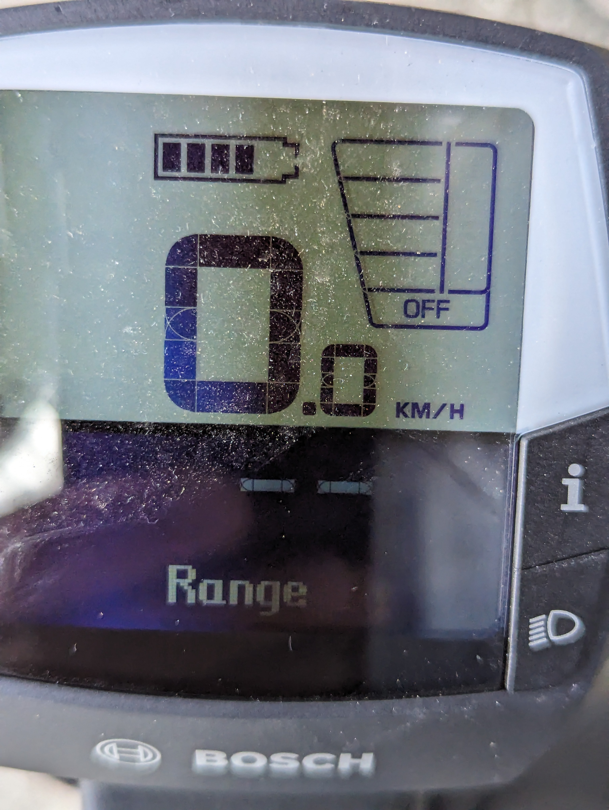
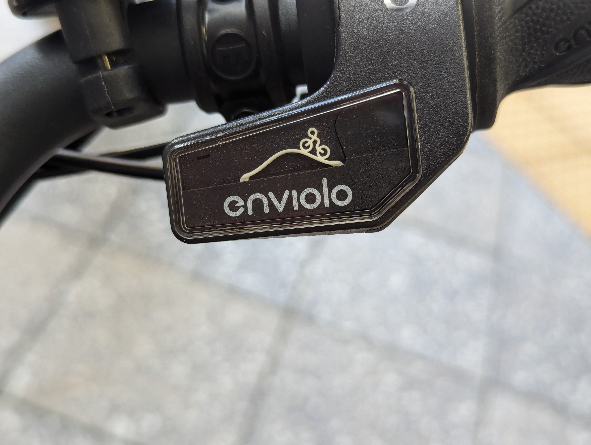

Two interesting examples from my e-bike:
The first is common in e-bikes. The charge indicator is a set of five little rectangles inside a battery outline, which makes sense. It’s very non-linear, though. The first little rectangle is almost half the battery charge.

When I mentioned this on Twitter some years ago the response was that lithium batteries are non-linear and there’s nothing that can be done about it. This superficially makes sense, until you think about it a bit. The indicator is not some magnets-and-wires pivoting-needle analogue voltmeter from the 1950s; it’s a digital display. Someone chose the cut-points on the voltage scale; someone chose the width of the little rectangles. The voltage-charge curve of a lithium battery isn’t a mystery, so there isn’t problem in having the indicator more linear. In fact, this particular bike comes with a range display that’s linear (in km) and reasonably accurate.
The second one is a display for the continuously-variable gear hub. This is cute but also quite clever – rather than using numbers or a ramp as in old volume controls, it shows a hill with a little cyclist person. As you adjust the gears, the hill changes in height and little cyclist person has more or less work to do

Obviously, when the hill is steep that means more work and so a higher gear. Or, obviously, when the hill is steep you would want a lower gear so the gear is lower. I know this is genuinely ambiguous, since the shop that repaired my old e-bike put the indicator in backwards!
This one doesn’t really matter, since I don’t actually look at the gear indicator and I just have to learn (as you do with any new bike) whether rolling your hand forward raises or lowers the gears.